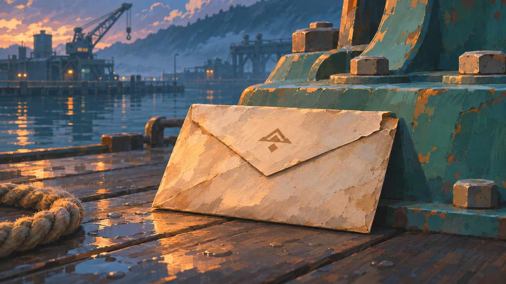
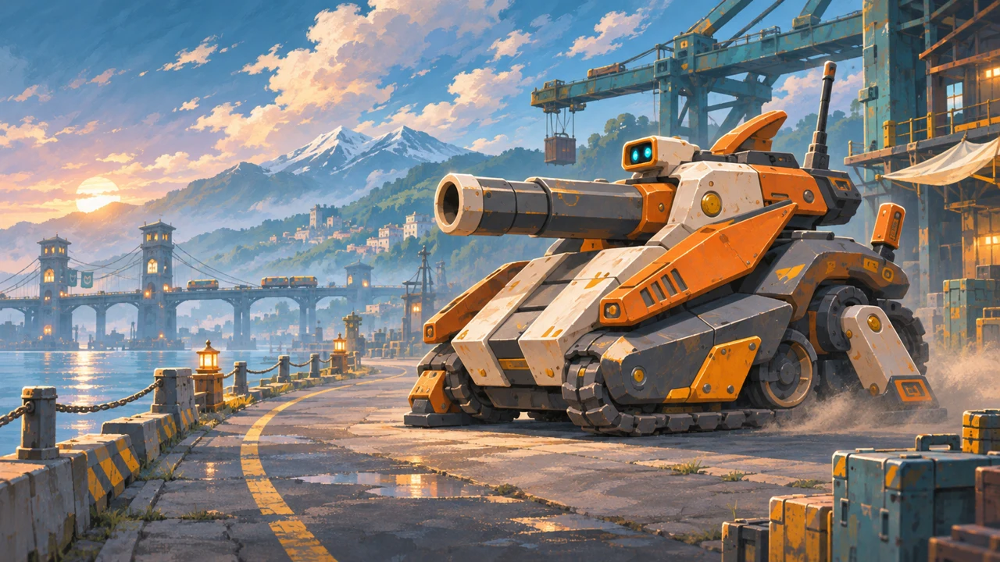

A LETTER. A REASON TO GO.
返事を届けに、道をひらく。
「道が開いたら、また会おう。」
止まった世界で、ガンが拾った一通の便り。道をつなぎ、仲間と出会いながら、まだ届いていない返事を届ける旅へ。
映像を読み込めませんでした。画像で技をご紹介しています。
01 / FIND YOUR SPECIAL
重い一撃も、怒涛の連射も。旅で出会う10機には、それぞれの必殺技がある。

「急がなくていい。ちゃんと、向こうへ行こう。」
慎重で、仲間の支えを一機で背負いがち。頼ることも覚えていく。
この旅で、叶えたいこと。
港の作業路を直し、荷物が行き交う音を取り戻す。
映像を読み込めませんでした。画像で技をご紹介しています。
01 / 10旅で出会う相棒たち
GUN
重い接触から、二段の爆発へ。近い射点から破砕砲を叩き込む。
全機体で基本の弾道は共通です。
二段の爆発で相手を押し出す。
最初の相棒はガン。仲間は旅を進めると合流します。
02 / MAKE YOUR OPENING
遮蔽を開く。射点を変える。敵の狙いを外す。その一手が、次の砲撃を変える。
映像を読み込めませんでした。画像と説明で攻略をご紹介しています。
一射目で遮蔽を外し、相手の手番を経て、開いた射線を次の一射で使う。
敵も歩き、転移し、射点を変える。旅が進むほど、相手に合わせた作戦が必要になる。
03 / A JOURNEY WORTH TAKING
海辺から火山へ、地下から空へ。景色が変われば、弾の通り道も変わる。

20テーマ
100ステージの旅
10機の相棒
次に試したい一手が、その先に。

A LETTER. A REASON TO GO.
「道が開いたら、また会おう。」
止まった世界で、ガンが拾った一通の便り。道をつなぎ、仲間と出会いながら、まだ届いていない返事を届ける旅へ。
04 / YOUR FIRST SHOT
一手ずつ状況を見て、自分の作戦を選ぶ。始めはガンと、最初の一射から。
左側の操作で移動・照準。どこから、どう通すかを考える。
右側の発射を押し続け、飛ばす強さを合わせる。
弾道と結果を見届けたら、次の一手を組み立てよう。
PCは矢印キーで移動・照準、スペース長押しで発射。
このサイトからブラウザ版を起動できます。スマホでは横向きでプレイしてください。音声はゲーム内で操作してから始まります。
進行は、このブラウザに保存されます。同じブラウザから続きを再開できます。ブラウザのデータ削除やプライベートモードにご注意ください。別端末への自動同期はありません。
1〜99面では、再挑戦するとその挑戦で使った武器・スキルが戻ります。勝利時に使用分が確定するので、違う作戦も試してみましょう。